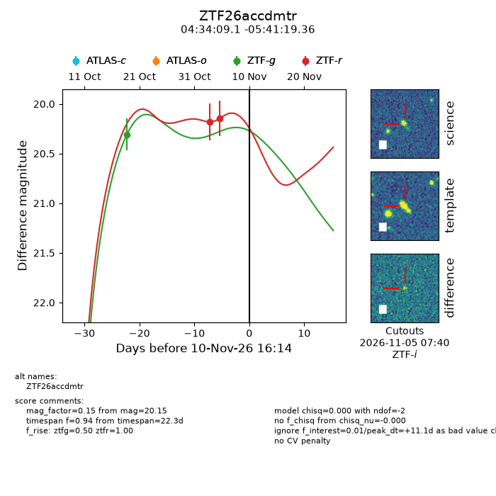
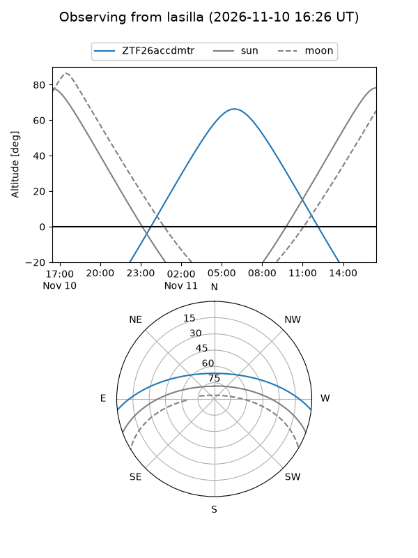
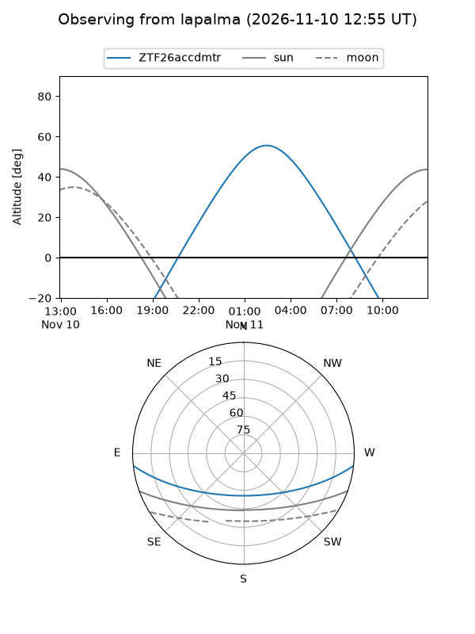
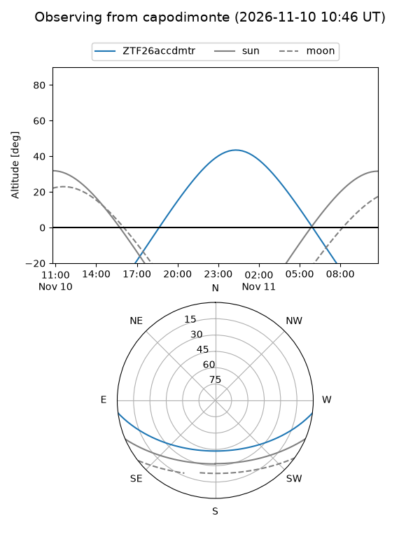
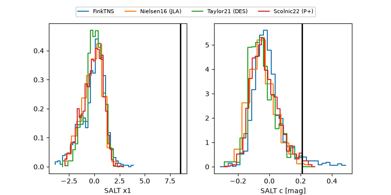

ZTF26accdmtr
Target ZTF26accdmtr at 2026-11-11 03:51
Aliases and brokers:
FINK-ZTF: ztf.fink-portal.org/ZTF26accdmtr
Lasair-ZTF: lasair-ztf.lsst.ac.uk/objects/ZTF26accdmtr
ALeRCE-ZTF: alerce.online/object/ZTF26accdmtr
Direct TNS query: direct search
alt names
ZTF26accdmtr (ztf,fink_ztf)
Coordinates:
equatorial (ra, dec) = 68.5380,-5.68871
equatorial (HMS+DMS) = 04:34:09.11,-05:41:19.36
galactic (l, b) = (201.4042,-32.99288)
Flags:
peak dt: +11.5
Photometry:
last ztfg=20.31, ztfr=20.15
1 ztfg, 2 ztfr detections
Lightcurve

Visibility



Additional plots
